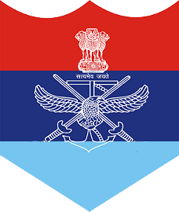
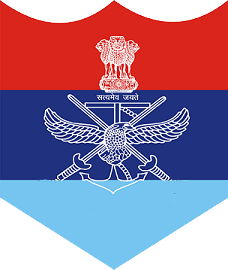

Indian


 

The Indian Armed Forces are the military forces of the Republic of India. It consists of three professional uniformed services: the Indian Army, Indian Navy, and Indian Air Force. The President of India is the Supreme Commander of the Indian Armed Forces but the executive authority and responsibility for national security is vested in the Prime Minister of India and their chosen Cabinet Ministers.The Indian Armed Forces are under the management of the Ministry of Defence of the Government of India. With strength of over 1.4 million active personnel,it is the world's second-largest military force and has the world's largest volunteer army. It also has the third-largest defence budget in the world. The Global Firepower Index report lists it as the fourth most-powerful military.India remains one of the largest importer of defence equipment with Russia, Israel, France and the United States being the top foreign suppliers of military equipment.
Vedic Period and Notable Battles: The earliest records of Indian military history are found in the Vedic texts. The Vedic Aryans used chariots and horses in warfare.The Rigveda mentions battles such as the Battle of the Ten Kings.
Mahajanapadas and Maurya Empire: Rise of Mahajanapadas (600 BCE – 321 BCE), the period saw the emergence of 16 large states or Mahajanapadas. Kingdoms like Magadha, Kosala, and Avanti had formidable armies. Maurya Empire (321 BCE – 185 BCE), founded by Chandragupta Maurya, this period marked significant military organization. His successor, Ashoka, is known for the Kalinga War, after which he embraced Buddhism and non-violence.
Medieval PeriodKnown for its strong military under rulers like Samudragupta. The period saw the use of elephants, cavalry, and archers.
Rajput clans were known for their valor and chivalry. Famous battles include those against invaders like Mahmud of Ghazni.
Established by Qutb-ud-din Aibak, the Sultanate saw several invasions and battles. Notable rulers like Alauddin Khilji and Muhammad bin Tughlaq expanded and defended the empire.
This South Indian empire had a well-organized military and is famous for battles against the Bahmani Sultanate.
Founded by Babur after the First Battle of Panipat. The Mughals had a well-organized military structure with a combination of infantry, cavalry, and artillery. Akbar, Aurangzeb, and others expanded the empire through numerous battles.
India gained independence from Britain, leading to the partition of India and Pakistan. The armed forces were divided between the two nations.
Post-1971, the Indian Armed Forces have undergone significant modernization. This includes the acquisition of advanced weaponry, indigenous production of arms and equipment, and restructuring of military doctrines.
Indian Army: The largest branch, responsible for land-based military operations. Known for its regimental system with units like the Punjab Regiment, Gorkha Regiment, and Rajput Regiment.
Indian Navy: Responsible for naval operations. It has a fleet of aircraft carriers, destroyers, submarines, and other vessels.
Indian Air Force: Responsible for aerial warfare and defense. It operates various fighter jets, transport aircraft, and helicopters.
Paramilitary Forces: Include the Border Security Force (BSF), Central Reserve Police Force (CRPF), and others, aiding in internal security and border protection.
India has been the largest troop contributor to UN missions since their inception. So far India has taken part in 43 peacekeeping missions with a total contribution exceeding 160,000 troops and a significant number of police personnel having been deployed. India has so far, provided one Military Advisor (Lt Gen R K Mehta), one Police Adviser (Ms Kiran Bedi), one Deputy Military Adviser (Lt Gen Abhijit Guha), 14 Force Commanders and numerous Police Commissioners in various UN Missions.[needs update] The Indian Army has also contributed lady officers as Military Observers and Staff Officers apart from them forming part of Medical Units being deployed in UN Missions. India has suffered 127 soldier deaths while serving on peacekeeping missions. India has also provided army contingents performing a peacekeeping operation in Sri Lanka between 1987 and 1990 as the Indian Peace Keeping Force.In November 1988, India also helped to restore the government of Maumoon Abdul Gayoom in the Maldives under Operation Cactus. As of June 2013, about 8000 Indian UN peacekeepers, both men and women, are deployed in nine missions, including the Congo, South Sudan, Liberia, UNDOF, Haiti, Lebanon, Abeyi, Cyprus and Cote de Ivoire. Recently Major Radhika Sen, a peacekeeper serving with the United Nations (UN) mission in the Democratic Republic of Congo (DRC), was honoured for her outstanding efforts in empowering local communities, particularly women.
IAF have also played crucial roles in disaster relief and humanitarian aid within India and abroad. For this the Indian Air Force provides regular relief operation for food and medical facilities around the world. The most recent relief operation of the IAF was in Kyrgyzstan. During the 2010 Ladakh floods, two Ilyushin Il-76 and four Antonov-32 aircraft of the IAF carried 30 tonnes of load, which include 125 rescue and relief personnel, medicines, generators, tents, portable X-ray machines and emergency rescue kits.During the 2010 Ladakh floods, two Ilyushin Il-76 and four Antonov-32 aircraft of the IAF carried 30 tonnes of load, which include 125 rescue and relief personnel, medicines, generators, tents, portable X-ray machines and emergency rescue kits. The IAF participated in the rescue operation codenamed Operation Raahat and evacuated more than 4640 Indian citizens (along with 960 foreign nationals from 41 countries) from Yemen during the 2015 military intervention by Saudi Arabia and its allies in that country during the Yemeni Crisis.